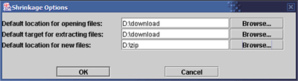

The Options Dialog

The Options Dialog contains three properties that can be set for the program:
- Default location for opening files: The initial location
to look in when browsing to a file to open.
- Default target for extracting files: The initial location
to point to when extracting an archive's contents.
- Default location for new files: The default location to
save new archive files.